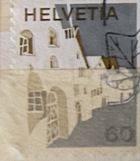
| SOURCE | TITLE| IMAGE MATCH | click to source page |
| eBay | SWITZERLAND 566 - Landscapes "Engadine Village" (pb11809) | eBay | 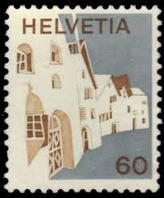 |
| eBay | 1111] Switzerland 1973 stamp COPPET postmark 06.08.1974 | eBay | 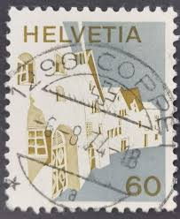 |
| Find Your Stamps Value | Federal Administration, Villages: Simme Valley 30c Brick red & dark blue stamp price, value | 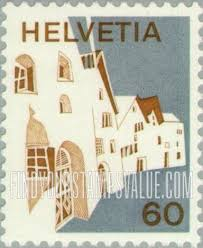 |
| eBay UK | Switzerland 1973-80 SG#855, 60c Buildings, Definitive MNH #A70047 | eBay UK | 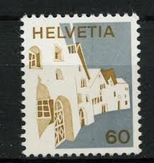 |
| HipStamp | 1973, Switzerland 60c, Used CTO, Sc 566 | Europe - Switzerland, General Issue Stamp / HipStamp | 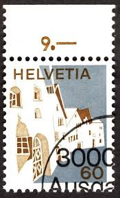 |
| 123RF | SWITZERLAND - CIRCA 1964: A Stamp Printed In Switzerland Shows Planta House, Samedan, Series, Circa 1964 Stock Photo, Picture and Royalty Free Image. Image 11262224. | 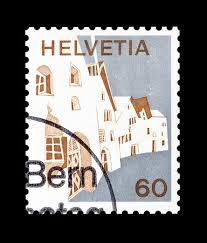 |
| HipStamp | Listings from 'ozzy1' in Europe > Switzerland / HipStamp | 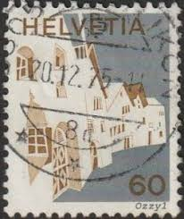 |
| iStock | Canceled Italian Postage Stamp Scaliger Castle Castello Scaligero Sirmione Italy Stock Photo - Download Image Now - iStock | 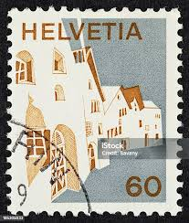 |
| Shutterstock | Switzerland Circa 1985 Stamp Printed By Stock Photo 73875505 | Shutterstock | 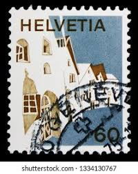 |
| eBay | SWITZERLAND STAMP MNH [SALE] [Choose 10pc of MINT is $3.5] unused WM8937 | eBay | 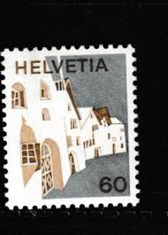 |
| Alamy | SWITZERLAND - CIRCA 1973: a stamp printed in the Switzerland shows Ermatingen, Thurgau, Eastern Switzerland, circa 1973 Stock Photo - Alamy | 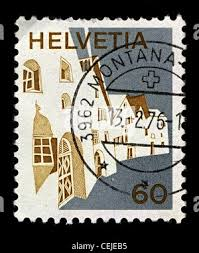 |
| Todocolección | s-11425- suiza. helvetia. - Buy Antique stamps of Switzerland on todocoleccion | 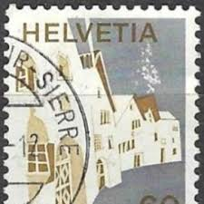 |
| Shutterstock | Vintage Mountain Stamp: Over 7,459 Royalty-Free Licensable Stock Photos | Shutterstock | 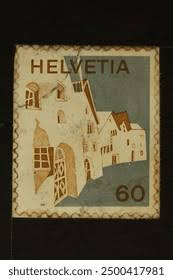 |
| Dreamstime.com | Facade of the Post Office in Paris Editorial Image - Image of perforation, mail: 352966210 | 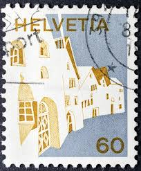 |
| Pngtree | Engadin Foto, Muat Turun Gambar Secara Percuma - Pngtree | 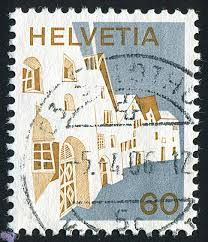 |
| eBay | SWITZERLAND STAMP MNH [SALE] [Choose 10pc of MINT is $3.5] unused WM8948 | eBay | 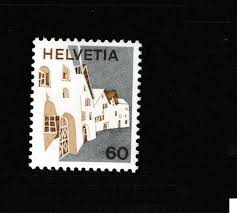 |
| eBay | SWITZERLAND Stamp Scott#566 A221- used | eBay | 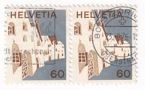 |
| Shutterstock | 3+ Thousand Seal Switzerland Royalty-Free Images, Stock Photos & Pictures | Shutterstock | 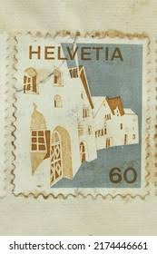 |
| Dreamstime.com | Isolated Switzerland Stamp editorial stock image. Image of stamp - 411025984 | 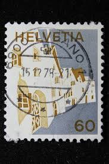 |
| Shutterstock | Switzerland And Singapore: Over 970 Royalty-Free Licensable Stock Photos | Shutterstock | 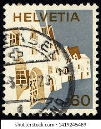 |
| Switzerland - 10(c) stamp of 1973 (#130922) | 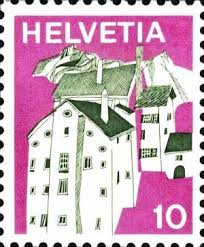 | |
| eBay | 1112] Switzerland 1973 stamp GENÈVE postmark 28.11.1974 | eBay | 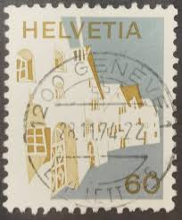 |
| Alamy | Switzerland stamp helvetia hi-res stock photography and images - Page 2 - Alamy | 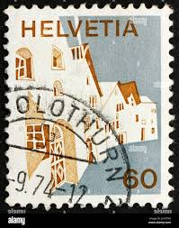 |
| Find Your Stamps Value | Federal Administration, Villages: Jura 25c Emerald & violet blue stamp price, value | 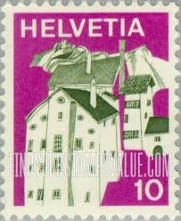 |
| Colnect | Stamp: Casa Patriziale, Russo (Switzerland(Pro Patria 1997) Mi:CH 1614,Sn:CH B624,Yt:CH 1542,Sg:CH 1356,Un:CH 1542,Zum:CH B258,Col:CH 1997.05.13-04 📮 | 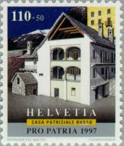 |
| Flickr | PATRICIO MANCILLA | Flickr | 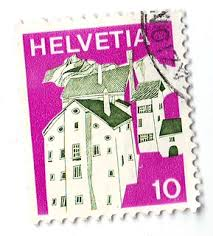 |
| eBay | LIECHTENSTEIN/EUROPA 1987 FIRST DAY ISSUE ENVELOPE-POSTMARKED/STAMP FROM EUROPE | eBay | 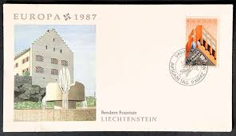 |
| eBay | Liechtenstein, EUROPA 1987 - European Modern Architecture Set FDC | eBay | 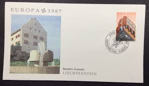 |
| Alamy | Postage stamp switzerland hi-res stock photography and images - Alamy | 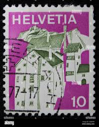 |
| Blogger.com | MULLER, Max | 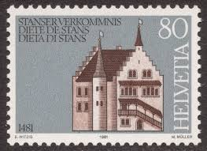 |
| eBay | Switzerland Flag & National Emblem Postal Stamps for sale | eBay | 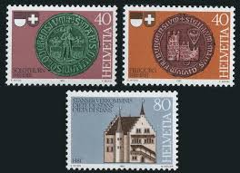 |
| Etsy | Rare Helvetia Stamps - Etsy | 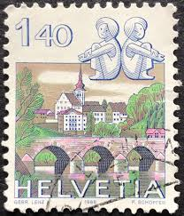 |
| HipStamp | 1967, Switzerland 2Fr, Used, Sc 452 | Europe - Switzerland, General Issue Stamp / HipStamp | 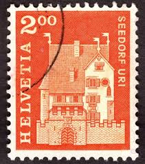 |
| Old-Stamps.com | Seedorf Uri / Helvetia 1967 | 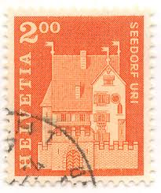 |
| Colnect | Stamp: A Pro Castle, Seedorf, Uri (Switzerland(Postal History - Motifs and Monuments (2nd series)) Mi:CH 863,Sn:CH 452,Yt:CH 796,Sg:CH 710,AFA:CH 858,Un:CH 796,Zum:CH 424,Col:CH 1967.09.18-06 📮 | 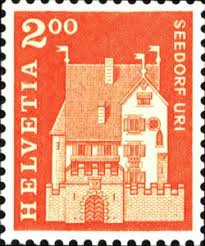 |
| ebid.net | India 1911 King George V 3Ps Used Stamp wm3 14p on eBid United Kingdom | 190774403 | 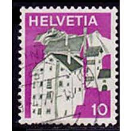 |
| Find Your Stamps Value | Value of helvetia pro patria 60 25 1975 stamps | 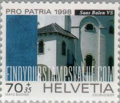 |
| eBay | Switzerland Stamp Covers for sale | eBay | 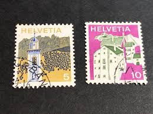 |
| 123RF | Helvetia Stamp Stock Photos and Images - 123RF | 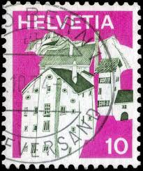 |
| 123RF | SAINT HELENA - CIRCA 1976: A Stamp Printed By ST. HELENA (GREAT BRITAIN) Shows Painting Scene From The Castle Terrace By George Hutchins Bellasis, Circa 1976 Stock Photo, Picture and Royalty Free Image. Image 37133976. | 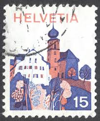 |
| eBay | Switzerland 1973 Definitive set Sc# 558-79 NH | eBay | 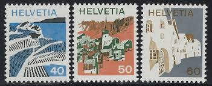 |
| ycjstamps.com | Stamp | 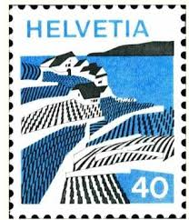 |
| allnumis.com | 40 Centimes 1973 - Riex (Waadt), Misc - Switzerland - Stamp - 52000 | 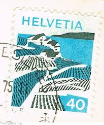 |
| eBay | 1987 Liechtenstein FDC Cover Europa | eBay | 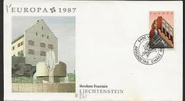 |
| HipStamp | Switzerland 1982 Scott 719A used - 1.30fr, Zodiac, Gemini | Europe - Switzerland, General Issue Stamp / HipStamp | 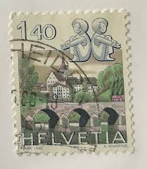 |
| Alamy | Postage stamp from Switzerland in the Postal history motives and monuments series issued in 1967 Stock Photo - Alamy | 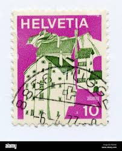 |
| redandcompany.com | Blog | Discover Design Inspiration – Join Us — Red+Company | Book Design Studio | 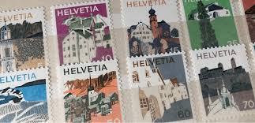 |
| eBay | D405890 Liechtenstein Set of Maximum Cards Caslte Vaduz 1987 | eBay | 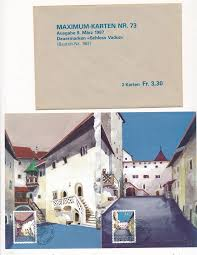 |
| World Stamps Project | Switzerland, Pro Patria postage stamps – varieties – World Stamps Project | 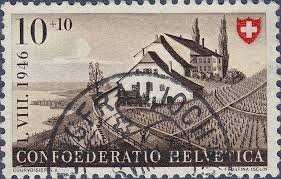 |
| eBay | Architecture Postage Swiss Stamps for sale | eBay | |
| Osta | Sveits " ARHITEKTUUR " 1973/75 (247182381) - Osta.ee | |
| Amazon.com | Amazon.com: Switzerland 1203-1205 (Complete.Issue.) fine Used/Cancelled 1981 stanser verkommnis (Stamps for Collectors) : Toys & Games | |
| Alamy | Turkey switzerland hi-res stock photography and images - Page 2 - Alamy | |
| Find Your Stamps Value | Federal Administration, Villages: Valais 50c Olive green & orange stamp price, value | |
| Auktionshaus Lempertz | Art of the 19th Century - Catalogue 1153 | |
| eBay | Europa 1987 Liechtenstein FDC Fleetwood Cachet Unaddressed | eBay | |
| BidCurios | Liechtenstein - FDC - 1987 - Europa - Building - (B-202/C1)m - BidCurios | |
| Discover 18 Swiss Stamps and postage stamps ideas on this Pinterest board | stamp, stamp collecting, philately and more | ||
| Find Your Stamps Value | Value of confoederatio helvetica 10 1938 stamps |